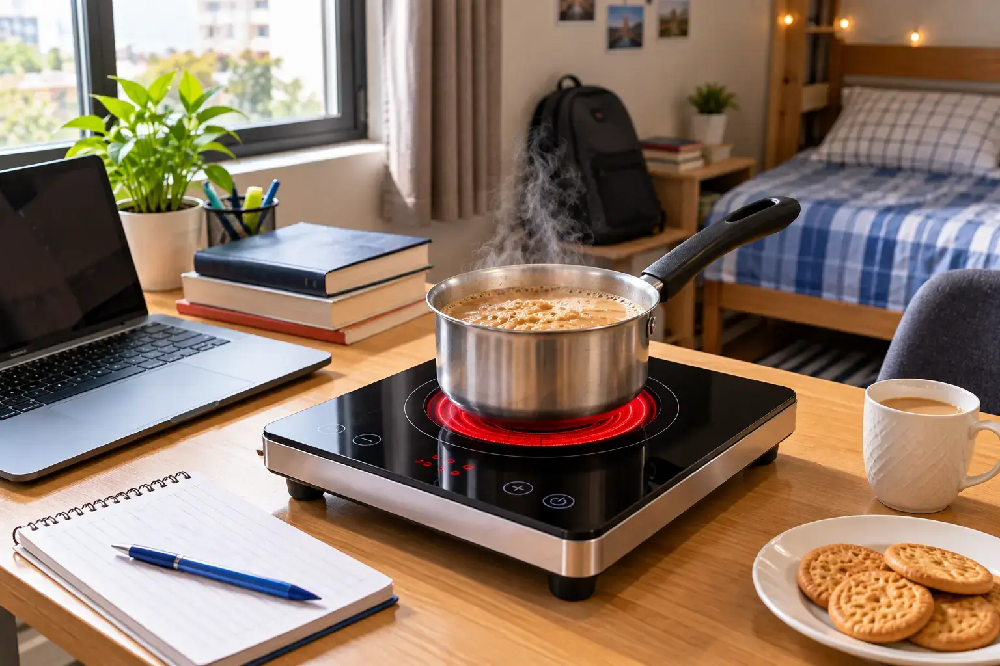
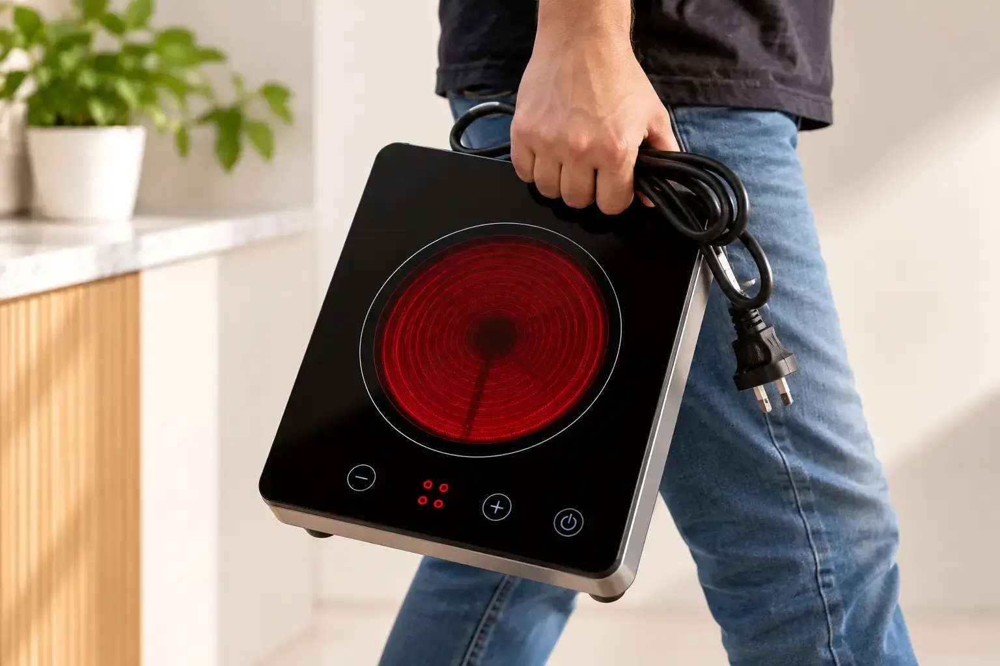

Portable Electric Stove Price in Pakistan (Single Burner)
Quick answer: A reliable portable electric stove in Pakistan costs about Rs 17,500 – 19,500. The Hot Glow-912 (Rs 17,520) is a lightweight 2200W single electric stove that runs on any 220V socket or household inverter. Cheap coil models (Rs 1,500 – 3,000) are portable too but far slower.

Image slot — upload images/portable-electric-stove-price-in-pakistan-hero-1.webp
Image slot — upload images/portable-electric-stove-price-in-pakistan-hero-2.webpWho needs a portable electric cooking stove?
- University students in hostels in Lahore, Islamabad and Peshawar
- Bachelors and families in rented flats with no reliable gas
- Office pantries and shops
- Homes that want a backup during gas load shedding
Glam Gas Hot Glow-912 Infrared Cooker
 Image slot — upload images/portable-hot-glow-912-1.webp
Image slot — upload images/portable-hot-glow-912-1.webp Image slot — upload images/portable-hot-glow-912-2.webp
Image slot — upload images/portable-hot-glow-912-2.webpRs 17,520 Rs 21,900 (glamgas.com, checked 2026-09-28)
Built light enough to carry between kitchen, hostel room or office — but still 2200W, with an 18–20 kg pot rating, six-blade cooling fan and overheat protection.
- Type: Single-burner infrared ceramic cooker (portable)
- Power: 2200W
- Pot load: 18–20 kg
- Electricity: ≈1.5 units/hour (brand figure)
- Best for: Students, hostels, rented flats, small families, inverter backup
- Warranty: 1 year on electrical parts (glass/body damage not covered)
Glam Gas Hot Glow-B120 Infrared Cooker
 Image slot — upload images/portable-hot-glow-b120-1.webp
Image slot — upload images/portable-hot-glow-b120-1.webp Image slot — upload images/portable-hot-glow-b120-2.webp
Image slot — upload images/portable-hot-glow-b120-2.webpRs 19,110 Rs 27,300 (glamgas.com, checked 2026-09-28)
Want a portable stove today and a built-in later? The B120 works tabletop out of the box and can be set into a marble counter when you move.
- Type: Single-burner infrared cooker — built-in or tabletop
- Power: 2200W
- Pot load: 18–20 kg
- Electricity: ≈1.5 units/hour (brand figure)
- Best for: Families who want a marble-top built-in look without a gas line
- Warranty: 1 year on electrical parts (glass/body damage not covered)
Single electric stove price in Pakistan
| Model | Type | Power | Price (PKR) |
|---|---|---|---|
| Hot Glow-912 | Single-burner infrared ceramic cooker (portable) | 2200W | Rs 17,520 |
| Hot Glow-B120 | Single-burner infrared cooker | 2200W | Rs 19,110 |
| Hot Glow-920 | Double-burner infrared ceramic hob | 2200W (dual power mode) | Rs 40,800 |
| GG-Cook King-12 | Heavy-duty commercial electric hot plate | 2700W | Rs 43,200 |
Prices from glamgas.com on 2026-09-28. Sale prices change often — always confirm on the product page before ordering.
Using a portable stove on an inverter or UPS
A 2200W stove needs an inverter with spare capacity above that — in practice a 3 kW or larger system if fans and lights are also running. On solar, cook during daylight hours to use free energy. See wattage and electricity cost.
Safety tips
- Plug directly into a wall socket rated 15A — avoid thin extension boards.
- Keep the vents clear so the cooling fan works.
- Let the glass cool before moving the stove.
- Do not use round-bottom karahis; use a flat-bottom wok instead.
Frequently Asked Questions
What is the portable electric stove price in Pakistan?
About Rs 17,500–19,500 for a good 2200W infrared model like the Glam Gas Hot Glow-912 (Rs 17,520). Basic coil stoves cost Rs 1,500–3,000.
Can a portable electric stove cook roti and biryani?
Yes. A 2200W infrared stove cooks roti on a tawa and holds an 18–20 kg biryani pot.
Is a portable electric stove safe in a hostel?
Yes if you use a proper wall socket and keep vents clear. Check your hostel's rules on cooking appliances.
Does a single electric stove work on UPS?
Yes, on an inverter with enough spare capacity — usually 3 kW or more if other appliances are running.
How heavy is a portable electric stove?
Infrared single-burner models are light enough to carry by hand; much lighter than a gas stove plus cylinder.